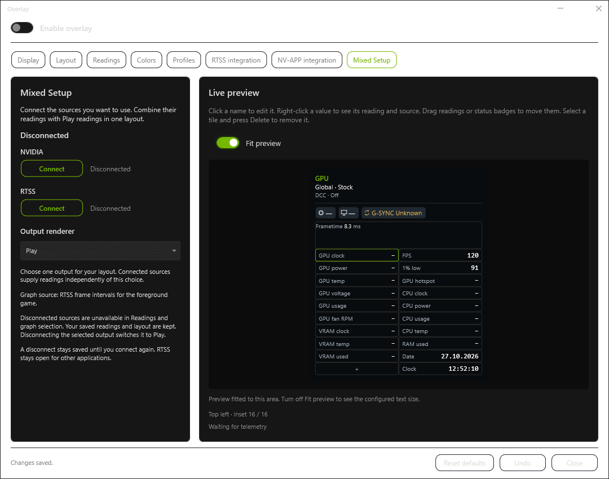
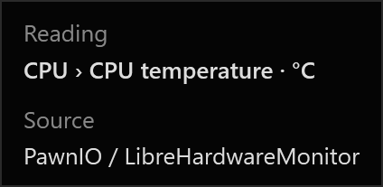
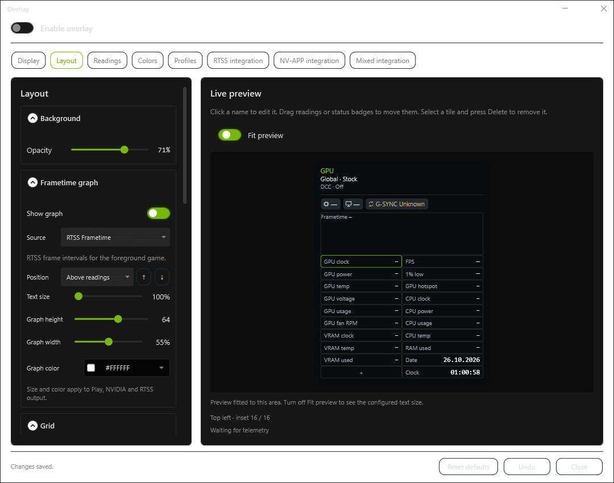
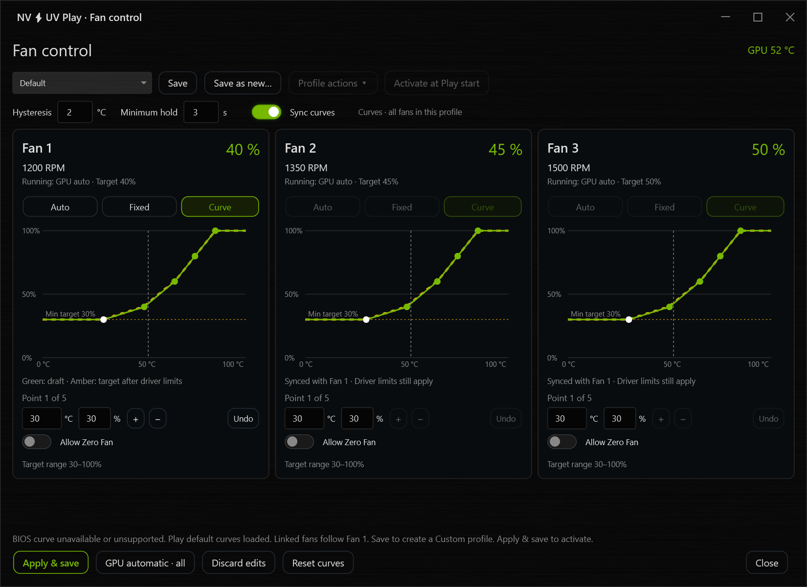
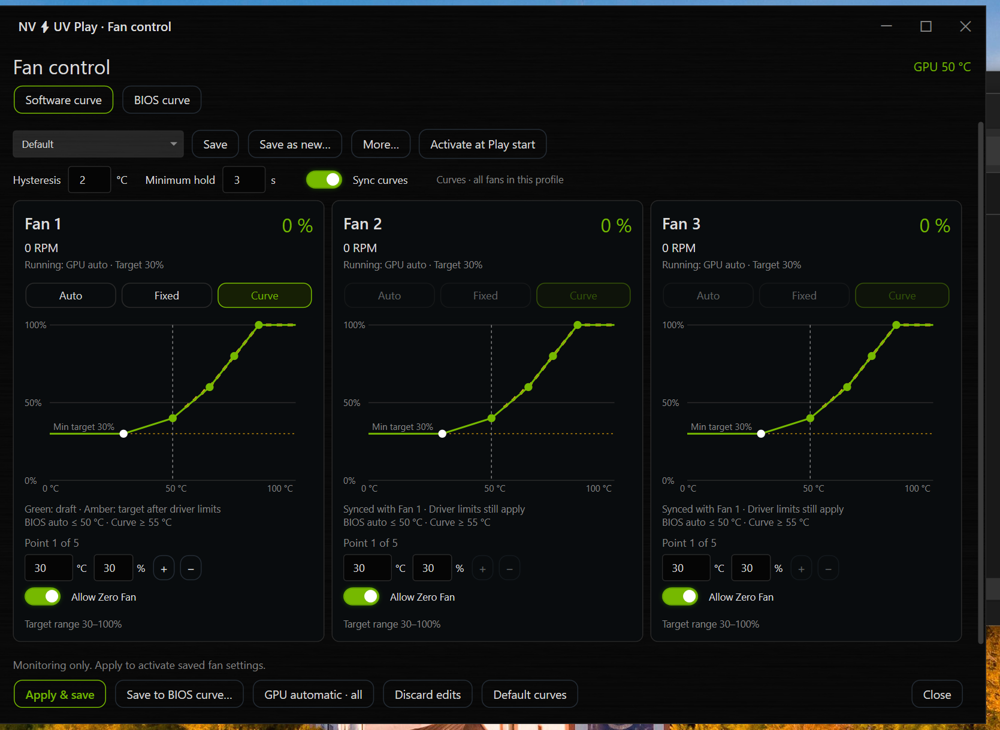
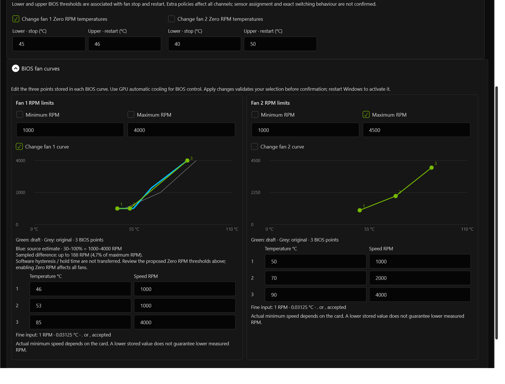
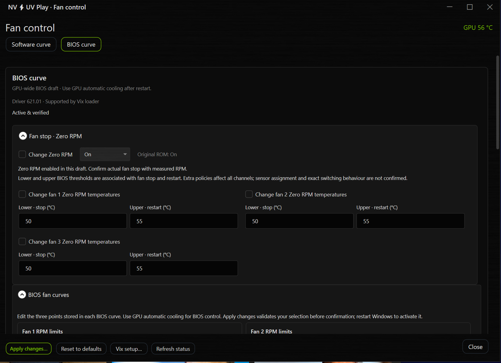
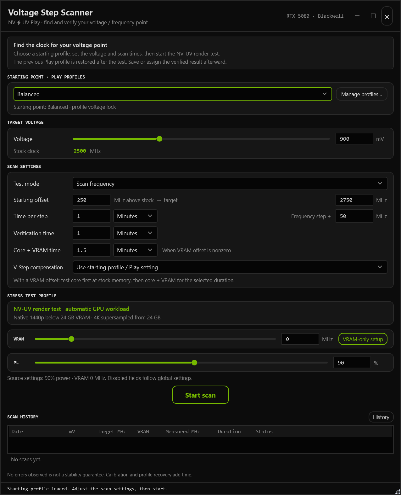

UPDATES UND ENTWICKLUNG
Play-Neuigkeiten
NEU IN VERSION 2.1.8
Klare Verbindungen, ruhigere Overlay-Werte
Mixed Setup macht die Verbindungen zu NVIDIA und RTSS einfacher bedienbar. Korrekturen für Frametime und Grafik-API verringern kurzzeitig verschwindende Werte. Ein Rechtsklick in der Vorschau zeigt, woher ein Messwert stammt.
Jede Quelle bei Bedarf verbinden
Mixed Setup bietet pro Quelle einen wechselnden Connect / Disconnect-Button. NVIDIA und RTSS lassen sich unabhängig verbinden. Ein grünes Connected bestätigt die aktuelle Verbindung. Geht sie verloren, bietet der Button wieder Connect an.

Nach dem Trennen steht die Quelle für neue Messwert- und Graphauswahlen nicht mehr bereit. Gespeicherte Auswahlen und das Layout bleiben erhalten. War die getrennte Quelle zugleich die aktive Ausgabe, übernimmt Play die Ausgabe. RTSS selbst bleibt für andere Anwendungen geöffnet. Eine manuell getrennte Verbindung bleibt bis zum erneuten Verbinden getrennt.
Die NVIDIA-Integration verwendet ihren vorhandenen Schalter zum Verbinden, Trennen und erneuten Versuch. Der zusätzliche Connect / reconnect-Button entfällt. Der kurze RTSS-Kompatibilitätshinweis steht als Tooltip am Verbindungsstatus.
Die Quelle hinter einem Messwert sehen
Ein Rechtsklick auf einen Messwert, ein Statusfeld oder den Graphen in der Live-Vorschau zeigt den ursprünglichen Messwertnamen und seine Quelle. Das funktioniert auch mit einer selbst vergebenen Beschriftung.

Messwertquelle und Ausgabe sind unabhängig. Beispielsweise lässt sich VRAM usage (%) unter Readings → GPU auswählen und im Play-Layout über NVIDIA ausgeben. Die NVIDIA-Ausgabe beschränkt das Layout nicht auf NVIDIA-Messwerte.
Frametime, Grafik-API und DLSS-Messwerte
Die RTSS-Ausgabe verwendet den nativen Frametime-Zahlenwert zusammen mit dem nativen Graphen. Kurze Lücken in den RTSS-Daten lassen die Grafik-API-Anzeige nicht mehr verschwinden. Veraltete Daten oder Daten eines anderen Prozesses bleiben weiterhin nicht verfügbar.
Die RTSS- und Mixed-Vorlagen verwenden RTSS Graphics API in der Statuszeile. Wird RTSS als Graphquelle gewählt, wird auch das passende API-Feld ausgewählt. Frische DirectX-Messungen haben Vorrang vor widersprüchlichen Prozesshinweisen.
NVIDIA-DLSS-Messwerte nutzen die korrigierte Messwerttabelle. Alte Mixed-Einstellungen starten kein ungenutztes RTSS mehr. Auch beim Aus- und Einschalten des Overlays bleibt ein manuell geschlossenes RTSS geschlossen.
Aussagekräftigere Berichte bei fehlenden Werten
Diagnoseberichte enthalten mehr Angaben zur Verfügbarkeit von Overlay-Messwerten, zum DCC-Lernen und zu passenden Afterburner-Profilen, einschließlich relevanter gespeicherter Kurvendaten. Damit lassen sich fehlende Quelldaten besser von Anzeige- und Profilproblemen unterscheiden. Die zusätzliche Diagnose setzt keine gelernten Profile zurück und ändert nicht das Lernverhalten von DCC.
Bei Overlay-Problemen helfen Spiel, Anzeigemodus, Ausgabe, Messwertquelle und Schritte zum Nachstellen.
NEU IN VERSION 2.1.7
Das kompatible Overlay
Das Play-Layout lässt sich jetzt auch über RTSS oder NVIDIA ausgeben. Messwerte aus mehreren Quellen, frei angeordnete Kacheln und ein eigener Frametime-Bereich machen das Overlay flexibler. Dazu kommen klarere Kurvenanzeigen und eine einfachere Arbeit mit Lüfterprofilen.
Ein Layout mit Play, RTSS oder NVIDIA anzeigen
Das Overlay wird weiter in Play gestaltet. Für die Darstellung stehen Play, RTSS und die NVIDIA-Ausgabe zur Wahl. Bei Mixed integration können NVIDIA-, RTSS- und Play-Messwerte gemeinsam in einem Layout stehen. Der gewählte Output renderer bestimmt, welcher Weg das fertige Overlay anzeigt.
Unter Profiles stehen vier Vorlagen bereit: Play template, NVIDIA template, RTSS template und Mixed template.
- Die passende Integration verbinden. Für Mixed werden NVIDIA und RTSS gemeinsam gestartet. Welche Werte verfügbar sind, hängt von den verbundenen Quellen und der Hardware ab.
- Eine Vorlage auswählen. Mixed kombiniert RTSS-/Afterburner-Frametimes, NVIDIA-GPU-Werte und Play-CPU-Werte. CPU-Temperatur und -Leistung nutzen die verfügbaren PawnIO-Sensoren.
- Werte anordnen und als eigenes Layout speichern. Die Frametime-Quelle bleibt separat wählbar. Fehlt eine Quelle, wird daraus kein erfundener Messwert.
Die NVIDIA-Integration ist experimentell und inoffiziell. Spiel, Vollbildmodus und Anti-Cheat können die Kompatibilität beeinflussen. Die RTSS-Ausgabe benötigt RTSS 7.3.7 oder neuer. Für Spiele sind NVIDIA oder RTSS die bevorzugten Ausgaben; Plays eigenes Overlay kann eine höhere Verzögerung haben und unterstützt kein exklusives Vollbild.
Messwerte direkt verschieben, Änderungen zurücknehmen
Messwerte lassen sich aus Readings direkt in die Vorschau ziehen. Beim Ablegen werden sie aktiviert; die Einfügemarkierung zeigt die Position oberhalb oder unterhalb eines vorhandenen Werts. Zusätzliche Zeilen entstehen bei Bedarf. Auch Statusangaben wie die Grafik-API können eine normale Kachel belegen.
Undo nimmt mehrere Schritte in Readings und Layout zurück. Beschriftung und Messwert erhalten getrennte Schriftgrößen. Kategorien und Messwerte sind alphabetisch sortiert, die Vorschau passt sich besser an den verfügbaren Platz an. Beim Aufzeichnen eines Tastenkürzels werden linke und rechte Modifikatortasten automatisch unterschieden.

Als Frametime-Quellen stehen Play ETW und RTSS bereit. Die nicht verfügbare Auswahl NVIDIA Frametime wurde entfernt; gespeicherte Auswahlen wechseln zu Play ETW. Play- und RTSS-Graphen bewegen sich in der NVIDIA-Ausgabe zwischen Datenaktualisierungen weiter. Die Zahlenebene bleibt beim Aktualisieren bestehen, statt für jeden Messwert neu aufgebaut zu werden.
Auch das native NVIDIA-Overlay lässt sich von Play aus konfigurieren: Messwerte, Textgröße, Farben und Position stehen im NVIDIA-Layout-Editor bereit. Änderungen werden direkt übernommen.
G-SYNC/VRR kennzeichnet den vom Treiber gemeldeten Monitorstatus, keinen sicheren Nachweis für aktive Synchronisierung im jeweiligen Spiel. Der optionale native DLSS on-screen indicator ist eine globale NVIDIA-Einstellung und unabhängig vom Play-Overlay. Display HDR ist aus den Vorlagen entfernt, weil der Wert den Displaystatus und nicht das HDR-Rendering des Spiels beschreibt.
GPU-Kurve und angefordertes Ziel besser unterscheiden
Bei einem unveränderten Entwurf und passendem Readback zeigt der Curve Editor die erfassten GPU-Kurvenpunkte. Das ist die vom Treiber zurückgelesene Kurve, keine Messung des gerade anliegenden Lasttakts. Die optionale gelbe Vergleichslinie zum angeforderten Ziel und zusätzliche Details lassen sich unter Settings → Advanced Curve Options einblenden.
Wird ein Profil in einen Slot geladen oder werden Parameter eines dort verwendeten Profils gespeichert, werden die Änderungen sofort angewendet, sobald Play bereit ist. Noch nicht angewendete Punktänderungen bleiben Entwürfe. Profil-Tastenkürzel funktionieren auch im Curve Editor.
Die optionale Algorithmusauswahl lässt sich unter Settings → Advanced Curve Options aktivieren. Anschließend wird die Methode direkt im Curve Editor pro Profil gewählt und gespeichert. Hard Lock trägt keine Experimental-Kennzeichnung mehr. Voltage Lock prüft den Readback und passt seine erzeugte Kurve beim Anwenden an. Verbleibende Taktabweichungen werden diagnostisch erfasst.
Lüfterkurven ausprobieren, gespeicherte Profile behalten
Reset curves wechselt jetzt sichtbar zu Default. Wird danach das gespeicherte Profil erneut ausgewählt, werden seine gespeicherten Kurven geladen. Speichern nach einem Reset legt ein separates Custom-Profil an. Die laufende Lüftersteuerung ändert sich erst beim Anwenden.

Jede Lüfterkurve hat ein mehrstufiges Undo. Bei Sync curves nimmt Undo an Fan 1 den Schritt für alle verbundenen Lüfter zurück. Ohne Sync arbeitet jeder Lüfter unabhängig. Undo bearbeitet den Entwurf; Apply & save aktiviert ihn.
Aus BIOS-Werten abgeleitete Ausgangskurven bieten bis zu sechs bearbeitbare Punkte. Vorhandene gespeicherte Kurven behalten ihre Punkte. Die Übertragung der Softwarekurve in die BIOS-Lüfterkurve über Vix ist derzeit nur für Blackwell-Grafikkarten verfügbar. Die Übertragung auf die verfügbaren BIOS-Punkte wurde verbessert; die drei BIOS-Stützpunkte und die Vorschau bleiben maßgeblich. Softwarekurve und BIOS-Kurve sind weiterhin getrennt.
Auch das letzte gespeicherte Lüfterprofil kann gelöscht werden. Das Menü Profile actions passt zum dunklen Design, und das Hauptfenster bleibt bedienbar, während Fan control geöffnet ist.
742 Einträge in der Spieledatenbank
Datenbank 2.44 ergänzt Total War: PHARAOH DYNASTIES, RoboCop: Rogue City - Unfinished Business und Unigine Heaven 4.0. Heaven wird dem Profil Performance zugeordnet. Die Erkennung berücksichtigt den eigentlichen Benchmark-Prozess. FPS und 1%-Low-Anzeigen benötigen wie bisher eine verfügbare Messquelle.
NV-UV Play v2.1.6
NEU IN VERSION 2.1.6
GPU-Kurve kontrollieren, Lüfterkurve übernehmen
Die gesetzte GPU-Kurve prüfen und die eigene Lüfterkurve in die Vix-BIOS-Einstellungen übertragen. Zusammengehörige Regler stehen direkt in den Editoren, mit einfacherer Einrichtung und klareren Rückmeldungen.
Sehen, was tatsächlich gesetzt ist
Readback curve zeigt eine Momentaufnahme der aktuell gesetzten GPU-Kurve, ohne den Entwurf zu verändern. Ein Klick in den Editor oder Escape führt zurück zur Bearbeitung.
Bei Profilwechseln werden auch die zurückzusetzenden Kurvenpunkte geschrieben und geprüft. Flatline → Selected point wird bei mehrfach vorkommenden Spannungspunkten nicht mehr fälschlich deaktiviert. Start rise erhält verständlichere Erklärungen. Die separate Funktion Curve Limits wurde entfernt.
Erweiterte Einstellungen direkt im passenden Editor
Zuerst unter Settings → Experimental features → Advanced GPU Tuning freischalten. Vix setup bietet eine gebündelte Installation sowie die originale BIOS-Sicherung, Status und Wiederherstellung. Power- und Offset-Limits stehen zusammen mit Takt- und Spannungseinstellungen unter Advanced options im Curve Editor. Die Lüftereinstellungen finden sich unter Fan Control → BIOS curve.
Ohne installiertes Vix zeigt der BIOS-Bereich Please install Vix first. mit einem Zugang zur Einrichtung. Fortschrittsanzeigen begleiten das Vorbereiten und Speichern. Erfolgreiche Verifizierungsdetails bleiben eingeklappt, bis sie gebraucht werden.
Die Advanced settings bleiben experimentell, bisher auf einer RTX 5090 und RTX 5080 getestet. Die Integration verwendet Vix von Panchovix. Vix setzt einen Windows-Treiber-Override. Das physische BIOS wird nicht geflasht.
Die eigene Software-Lüfterkurve in den BIOS-Einstellungen
Die Kurve wie gewohnt unter Software curve einstellen. Mit Sync curves folgen die anderen Lüfter den Änderungen an Fan 1. Default curves lädt wieder die Play-Standardkurven.

- Vix zuerst einrichten. Save to BIOS curve setzt eine eingerichtete Vix-Integration und die originale BIOS-Sicherung voraus.
- Save to BIOS curve wählen. Play nähert die Softwarekurve mit drei BIOS-Punkten an. Vorschau und geschätzte Abweichung vor dem Bestätigen prüfen.
- Anwenden und Windows neu starten. Der Override wird nach dem Neustart wirksam. Für die BIOS-Kurve die automatische GPU-Lüftersteuerung verwenden. Die ursprünglichen Softwarepunkte und Einstellungen bleiben gespeichert und werden beim nächsten Öffnen wieder geladen.
Die Umrechnung prüfen

Zero Fan und Originalwerte griffbereit

Allow Zero Fan nutzt den aktiven BIOS-Stoppbereich einschließlich verifizierter Vix-Werte. Oberhalb übernimmt wieder die Softwarekurve. Ob die Lüfter tatsächlich stoppen, entscheidet die Karte. Target range bezeichnet den erlaubten Sollwertbereich; die gemessene Lüftergeschwindigkeit kann davon abweichen.
Die Bilder zeigen Beispielwerte, keine Tuning-Empfehlung.
Weitere Verbesserungen
Notebook- und Dual-GPU-Support wurden verbessert. Das MFG-Preset der RTX 5090 nutzt nun die Eco-Kurve mit 100 % Powerlimit. Zusätzlich gibt es einen Core/XBAR-Ratio-Regler.
G-SYNC/VRR wurde aus dem DEV!-Template entfernt und bleibt einzeln auswählbar. Abstände, englische Tooltips, Fortschrittsanzeigen und die Fan-/Vix-Diagnose wurden verbessert.
NV-UV Play v2.1.5
NEU IN VERSION 2.1.5
Hotfix für Kurvenprüfung, Scanner und Vix
Eine zusätzliche Prüfung in 2.1.4 konnte korrekt angewendete Kurven ablehnen. Der Hotfix entfernt diese Prüfung, korrigiert einen Scanner-Abbruch und gibt Vix auf den vom Loader unterstützten Treibern wieder frei.
Kurvenabweichungen bleiben in der Diagnose
Die mit 2.1.4 eingeführte Kurvenprüfung war zu restriktiv. Das Ziel bleibt, möglichst saubere und verlässliche Ergebnisse zu erzielen. Taktabweichungen werden deshalb künftig in der Diagnose erfasst, um weitere Erkenntnisse zu sammeln und zukünftige Prüfungen zu verbessern. Play lehnt eine Kurve nicht mehr allein aufgrund dieser Abweichung ab. Geschriebene Offsets, Spannungspunkte und das erzeugte Plateau werden weiterhin geprüft.
Der Scanner berücksichtigt außerdem die vorhandene Behandlung eines unterstützten zusätzlichen Leerlaufpunkts bei RTX-30- und RTX-40-Karten. Eine Änderung an diesem Punkt konnte bisher einen Scan unterbrechen. Echte Schreibfehler und erkannte Instabilität beenden den Test weiterhin.
Betroffene Profile und Scans nach dem Update bitte erneut testen. Falls das Problem bleibt, hilft ein neuer Diagnosebericht.
Vix richtet sich nach der Treiberunterstützung des Loaders
Die Vix-Integration in Play war zu restriktiv. Die zusätzliche Begrenzung nach Treiberversion entfällt. Maßgeblich ist jetzt die Kompatibilitätsprüfung des installierten Vix-Loaders.
Falls nach einem zukünftigen Treiberupdate eine Inkompatibilität auftritt, lassen sich über Update Vix tools... in der Einrichtung die aktuellen Komponenten erneut herunterladen.
Settings changed zeigt jetzt tatsächliche Änderungen an. Beispielsweise markiert das Anklicken einer unveränderten GPU-Offset-Grenze die Einstellungen nicht mehr als geändert. Wird ein bearbeiteter Wert zurückgesetzt, erscheint wieder der vorherige Status.
Einheitliche graue Flächen und Overlay-Abstände
Scanner und Overlay-Einstellungen erhalten dieselben flachen grauen Hintergründe wie Advanced GPU Tuning. Alle Overlay-Messwertspalten haben nun gleiche Innenabstände auf beiden Seiten, auch bei schmalen Kacheln geprüft.

Enthält die Spieledatenbank 2.42 mit 739 Spielen.
SmartScreen und Microsoft Defender
Es gibt weiterhin Probleme mit SmartScreen und Defender beim Update oder Start. Falls SmartScreen das automatische Update blockiert, die Version bitte manuell von GitHub herunterladen.
Startet Play nicht, bitte unter Windows-Sicherheit > Viren- & Bedrohungsschutz > Schutzverlauf nachsehen, ob eine EXE- oder DLL-Datei von Play in Quarantäne liegt. Nach Prüfung der Erkennung und der Herkunft aus dem offiziellen Play-Release die betroffene Datei wiederherstellen und bei Bedarf auf dem Gerät zulassen. Microsoft erläutert diese Aktionen im Schutzverlauf.
Ein Bericht wurde bereits an Microsoft gesendet.
NV-UV Play v2.1.4
NEU IN VERSION 2.1.4
Mehr Kontrolle über Limits und Lüfter mit Vix
Power- und Offset-Limits, BIOS-Lüfterkurven und Zero RPM. Mit einer Anleitung von der BIOS-Sicherung bis zur Prüfung nach dem Windows-Neustart.
Ausgewählte Vix-Funktionen, begleitet von Play
Zuerst unter Settings → Experimental features → Advanced GPU Tuning freischalten, anschließend Curve editor → Advanced GPU Tuning öffnen. Der neue Bereich VBIOS limits & fans ist aktuell für Blackwell mit NVIDIA-Treiber ab 616.56 innerhalb der Reihen 616.x und 617.x verfügbar. Andere GPU-Familien und Treiberreihen sind derzeit nicht freigegeben.
Play lädt die originalen, unveränderten Vix-Tools separat aus den offiziellen Projekt-Releases und spricht sie über ihre Kommandozeilenschnittstelle an. Die Integration enthält ausgewählte Einstellungen; die Werkzeuge zum Bearbeiten und Laden stammen von Vix.
Anpassbar sind das minimale und maximale Power-Limit sowie die Grenzen für GPU- und VRAM-Offsets. Diese Grenzen gelten für die ganze GPU. Eine Änderung setzt noch kein Power-Limit und keinen Offset in deinem UV-Profil.
Vix-Einstellungen lassen sich nicht normal zurücksetzen? Falls die normale Wiederherstellung scheitert oder der NVIDIA-Treiber nach dem Anwenden eines Overrides nicht mehr startet, den Play-Override der betroffenen GPU im abgesicherten Modus von Windows entfernen und danach Windows normal neu starten. Hier stehen die Schritte zur Wiederherstellung. Der abgesicherte Modus allein entfernt den Override nicht.
Vielen Dank, Panchovix!
Ein großes Dankeschön an Panchovix und die Mitwirkenden an Vix für diese Möglichkeiten, die eigene Grafikkarte individueller einzustellen. Schaut euch die Originalprojekte unbedingt an. Dort gibt es den vollständigen Funktionsumfang und weitere Einstellungen:
Eine Einrichtung für Limits und Lüfter
- Install or update tools. Vix und NVFlash für die BIOS-Sicherung herunterladen.
- Back up your BIOS. Play liest und prüft das BIOS deiner Karte. Die geprüfte Sicherung wird bei späteren Änderungen wiederverwendet.
- Prepare settings. Die gewünschten Werte auswählen. Die passenden Kategorien öffnen sich und leuchten kurz auf. Beim Vorbereiten wird auch eine Sicherung gespeichert.
- Apply override. Die vorbereiteten Einstellungen prüfen und bestätigen. Play meldet anschließend, was gespeichert wurde.
- Restart & verify. Den Windows-Neustart bestätigen. Beim nächsten Start prüft Play den gespeicherten Zustand.

Das physische VBIOS wird nicht geflasht. Vix richtet einen Windows-Treiber-Override ein. Eine eigene UV-Kurve lässt sich mit dieser Integration derzeit nicht als neue Stockkurve im BIOS speichern.
BIOS-Lüfterkurven und Zero RPM
Für unterstützte Einträge im gesicherten ROM lässt sich die Kurve jedes Lüfters über Temperatur und Drehzahl in RPM einstellen. Bei Zero RPM stehen der Ein-/Aus-Schalter und die verfügbaren Temperaturen zum Stoppen und Anlaufen bereit. Nicht unterstützte Regler bleiben gesperrt.
Ein Lüfter kann beispielsweise unter 50 °C stoppen und über 55 °C wieder anlaufen, sofern sein ROM diese Werte unterstützt. Damit die BIOS-Kurven greifen, die automatische Lüftersteuerung verwenden. Auch diese Einstellungen werden über Prepare, Apply und Restart übernommen.

Wiederherstellen und neu starten
Setup → Restore, recovery & cleanup stellt die ursprünglichen Einstellungen wieder her und startet Windows nach Bestätigung neu. Danach prüft Play die Wiederherstellung. Nach einem abgeschlossenen Neustart bleibt kein veralteter Neustarthinweis mehr stehen.
Tools entfernen, Sicherungen behalten
Remove downloaded tools entfernt die von Play verwalteten Tool-Downloads und behält BIOS-Sicherungen. Ein vorhandener Override muss zuvor zurückgesetzt und nach dem Neustart geprüft werden.
Übersichtlicheres Tuning-Fenster
Aufklappbare Kategorien merken sich ihren Zustand. Eingaben zeigen die aktuellen Treiberlimits, die originalen ROM-Werte bleiben zum Vergleich sichtbar. Profilgebundene Takt- und Spannungseinstellungen haben einen eigenen Tab, kürzere Hilfen und getrennte Speicheraktionen.
UV-Kurve bei der Anmeldung anwenden
Ein Startprofil unterstützt Play bereits. Bei ausgeschaltetem normalem Play-Autostart wendet die Startaufgabe die gespeicherte Kurve bei der Windows-Anmeldung an und beendet sich. Play muss für diese Kurve nicht weiterlaufen. Die Kurve wird dabei nicht ins BIOS geschrieben.
Vix-Override im abgesicherten Modus zurücksetzen
Wenn Play noch funktioniert, zuerst Advanced GPU Tuning → VBIOS limits & fans → Setup → Restore, recovery & cleanup → Restore original settings & restart… verwenden. Vor der Bestätigung des Neustarts offene Arbeiten speichern.
Falls die normale Wiederherstellung scheitert oder Windows den NVIDIA-Treiber nach dem Anwenden eines Overrides nicht mehr laden kann:
- Windows im abgesicherten Modus starten. Am Anmeldebildschirm oder im Startmenü die Umschalttaste gedrückt halten und Neu starten wählen. Danach Problembehandlung → Erweiterte Optionen → Starteinstellungen → Neu starten auswählen und 4 oder F4 drücken. Ist keiner der beiden Bildschirme nutzbar, über einen Windows-Installations-USB starten und Computerreparaturoptionen wählen. Falls Windows danach fragt, wird der BitLocker-Wiederherstellungsschlüssel benötigt.
- Den passenden Play-Override mit Vix Loader entfernen. Im abgesicherten Modus Windows PowerShell als Administrator öffnen und RECOVERY.txt aus der Sicherung des installierten Overrides befolgen. Darin stehen Loader-Pfad, GPU-Kennung, erwarteter Override-Hash und der Befehl zum Entfernen. Karte und Hash vorher abgleichen. Bei einer Abweichung abbrechen, statt einen anderen Override zu entfernen.
- Nach erfolgreichem Entfernen Windows normal neu starten. Der abgesicherte Modus allein setzt die Einstellungen nicht zurück. original.rom, backup.json und RECOVERY.txt behalten; das physische BIOS muss nicht geflasht werden.
Vor Änderungen unter Setup → Restore, recovery & cleanup → Open backups die Sicherungen öffnen und die Wiederherstellungsanleitung auch ohne Play zugänglich halten. Offizielle Vix-Wiederherstellungsanleitung ↗ · Microsoft: Windows-Starteinstellungen ↗
Genauere Kurvenprüfung und Spielerkennung
Die Kurvenprüfung berücksichtigt die Rundung des Treibers und den aktuellen Offset-Bereich, auch bei erhöhten Grenzen. Eine korrekt gesetzte Kurve soll dadurch keinen irreführenden Warnhinweis mehr auslösen. Fehlende oder abweichende Rücklesewerte werden weiterhin gemeldet. Eine bestätigte Kurve ersetzt keinen Stabilitätstest.
Die Spielerkennung korrigiert falsche ICARUS-Treffer. Wechselt die erkannte ausführbare Datei, wird auch die Profilzuordnung erneut geprüft. Eine zusätzliche Prozesserkennung verbessert außerdem die Fensterzuordnung des Overlays in Helldivers 2.
Auch das Über-Fenster wurde für kleinere Fenster und höhere Skalierung angepasst. Drittanbieterhinweise, Projektlinks und Danksagungen bleiben dort erreichbar.
Play startet nach einem Update nicht? Unter Windows-Sicherheit → Viren- & Bedrohungsschutz → Schutzverlauf prüfen, ob eine Datei in Quarantäne verschoben wurde. Ein solcher Eintrag ist für sich allein kein Beleg für einen Fehlalarm. Microsoft-Hilfe zum Schutzverlauf ↗
Mehr Spielraum für dein Overlay
Die Höhe des Frametime-Graphen lässt sich unabhängig einstellen. Beschriftungen für GPU, CPU und Allgemein können eigene Farben erhalten. Ein optional farbiges Raster hilft, die Gruppen auseinanderzuhalten.
API, Auflösung, HDR und G-SYNC lassen sich zwischen Messwertzellen und Statuszeile verschieben. So können beispielsweise API und Auflösung über dem Graphen bleiben, während HDR neben den anderen Bildschirmwerten steht.
Der randlose Fenstermodus bleibt empfohlen, exklusives Vollbild wird nicht unterstützt. G-SYNC-Kompatibilitätsmeldungen werden weiter untersucht.
MFG und gespeicherte DCC-Einstellungen
Das MFG-Preset verwendet wieder ein Power-Limit von 100 %. DCC behält beim erneuten Öffnen die gespeicherten NVIDIA-Max-Frame-Rate-Einstellungen bei, auch wenn DCC ausgeschaltet ist.
Stabilizer-Korrekturen
Die Behandlung zusätzlicher Blackwell-Kurvenpunkte durch den Stabilizer wurde korrigiert. Die optionale VRAM-Korrektur reduziert positive Speicher-Offsets in Richtung Stock. Der Stabilizer reagiert auf erkannte Treiberabstürze; nicht jeder Spielabsturz lässt sich auf Undervolting zurückführen.
Spieledatenbank 2.41
737 Spiele, darunter Assetto Corsa und Transport Fever 3. Ein vorgeschlagenes Profil bleibt ein Ausgangspunkt für Tests mit der eigenen Karte.
NV-UV Play v2.1.3
NEU IN VERSION 2.1.3
Bessere Overlay-Anpassung
Eigene Namen, übersichtliche Messwerte und neue Statusanzeigen. Dazu Celsius oder Fahrenheit nach Wunsch.
Die neue DEV!-Vorlage
DEV! bietet breitere Spalten, eine neue Anordnung und 71 % Hintergrunddeckkraft. API, Auflösung, HDR und G-SYNC stehen oberhalb des Frametime-Graphen.
Laden über Overlay → Profiles → Use DEV! template. Speichere dein bisheriges Layout vorher als Profil, wenn du es behalten möchtest. Das Update allein verändert vorhandene Layouts nicht.

Messwerte ordnen und umbenennen
Die Kategorien GPU, CPU und Allgemein erleichtern die Auswahl. Eindeutige Namen wie GPU-Auslastung und CPU-Temperatur zeigen, was gemessen wird.
Klicke unter Readings oder in der Vorschau auf einen Namen. Enter oder Verlassen des Feldes speichert, Escape verwirft, der Rücksetzpfeil stellt den Standard wieder her. Eigene Namen bleiben im Overlay-Profil gespeichert.
Ziehe einen Wert zum Verschieben. Entf entfernt eine ausgewählte Kachel oder Statusanzeige; im Namensfeld löscht die Taste Text. Das Mausrad funktioniert im gesamten Overlay-Menü.

Bildschirmstatus über dem Graphen
Einzeln aktivierbar unter Overlay → Readings → General. Vorhandene Statusanzeigen ziehen aus dem Raster nach oben und behalten Namen und Farben.
- API
- Erkannte Grafik-API, etwa DX11, DX12 oder Vulkan. Uneindeutige DirectX-Ergebnisse bleiben DXGI.
- Auflösung
- Spielfenster-Innenfläche oder Desktop-Monitor in physischen Pixeln. Keine interne Renderauflösung von DLSS, FSR oder dynamischer Auflösung.
- HDR
- Bildschirmausgabe: Off, HDR10, HDR10+ oder Unknown. Natives Spiel-HDR, Auto HDR und SDR-Inhalte auf einem HDR-Desktop werden nicht unterschieden.
- G-SYNC / VRR
- Treiberstatus: Active, Inactive oder Unknown. Active bestätigt keine korrekte Funktion im Spiel; Unknown bedeutet, dass kein verlässlicher Status vorliegt.
Celsius oder Fahrenheit
Settings → Advanced options → Temperature unit legt die Einheit für Play fest, einschließlich Lüfterkurven-Eingaben und Scanner.
Unter Overlay → Readings → Temperature unit übernimmt das Overlay die App-Einstellung oder nutzt eine eigene Einheit. Die Auswahl wird im Overlay-Profil gespeichert.
So kann Play 60 °C und das Overlay 140 °F anzeigen. Die Kühlungseinstellungen bleiben unverändert.

Stabilizer-Korrekturen öffnen
Stabilizer Settings → Open corrections zeigt gespeicherte Anpassungen, ohne offene Einstellungen zu verlieren. Der Stabilizer reagiert auf erkannte GPU-Treiberabstürze.
Oberfläche überarbeitet
Klarerer Update-Text, größere Patchnotes mit aufklappbaren Versionen sowie korrigierte grüne Umrandungen und abgerundete Dialogschaltflächen.
Spieledatenbank 2.40
735 Spiele, neu dabei: Clive Barker’s Hellraiser: Revival. Für Rust wird Balanced als Ausgangsprofil vorgeschlagen.
Kompatibilität und Diagnose
Randloser Fenstermodus empfohlen, exklusives Vollbild nicht unterstützt. G-SYNC-Meldungen werden weiter untersucht; eine Behebung ist nicht bestätigt. Erweiterte Berichte erfassen Overlay und Bildschirmausgabe. Bitte Spiel, Anzeigemodus und Verhalten beim Umschalten mit Strg + Alt + O angeben.
NV-UV Play v2.1.2
NV-UV PLAY v2.1.2
DCC-Profile behalten, Grafik-API im Blick
DCC speichert gelernte Profile wieder zuverlässig und kann sie beim nächsten Spielstart übernehmen. Dazu kommen die Grafik-API im Overlay, ein verbesserter Frametime-Graph und die automatische Bereinigung alter Updates.
Beispiel: ein vorhandenes 120-FPS-Limit
Ist global im NVIDIA-Treiber ein Limit von 120 FPS gesetzt, zeigt DCC diesen Wert an. Das gilt auch für die globale VSync-Einstellung. Änderungen über DCC gelten während der Nutzung; beim Ausschalten wird der vorherige Treiberzustand wiederhergestellt.

Beispiel: die Grafik-API einblenden
Öffne Overlay settings → Readings und aktiviere Graphics API. Position und Farbe lassen sich wie bei den anderen Readings anpassen.

Die Anzeige umfasst DirectX 8, 9, 10, 11 und 12 sowie Vulkan und OpenGL. Die Erkennung hängt vom Spiel und Darstellungsmodus ab. Bei uneindeutiger DirectX-Zuordnung bleibt DXGI stehen. Die OpenGL-Erkennung ergänzt keine FPS-Erfassung.
Messwerte nach deinen Vorstellungen
Ein Overlay kann Messwerte in zwei Spalten und den Frametime-Verlauf darunter zeigen. Der Graph wurde verbessert. Layouts lassen sich weiter individuell zusammenstellen und speichern.

Wenn ein Spiel nicht erkannt wird
Prüfe, ob es in der Game Library steht, und füge es bei Bedarf manuell hinzu. Für die Aufnahme in die gemeinsame Bibliothek gibt es Request a game. Datenbank 2.39 enthält 734 Einträge, darunter Life is Strange, Life is Strange Remastered und Blitzkrieg. Die EXE-Zuordnung von Golf It! wurde korrigiert.
Was mit Update-Resten passiert
Bestätigte fehlgeschlagene Updates werden nach sieben Tagen ohne Änderungen entfernt, sobald eine neuere Play-Version erfolgreich gestartet wurde und mindestens eine Minute läuft. Aktive Updates und unbekannte Dateien bleiben geschützt. Neue Update-Dateien liegen unter ProgramData/NV-UV-Play/Updates; der frühere CurveLab-Updateordner wird mitbereinigt.
DCC nach Änderungen wiederherstellen
Recover DCC kann einen blockierten Zustand nach Änderungen der Treiberumgebung nach Bestätigung und GPU-Prüfung wiederherstellen. Gespeicherte Profile bleiben erhalten. DCC bleibt zunächst aus; die automatische Profilumschaltung pausiert bis zur Fortsetzung. Der Hinweis verweist auf die UV-Profilplätze.
Version 2.1.2 laden
Das Update ist über Updates in Play und als Portable-ZIP verfügbar.
NV-UV Play v2.1.1
NV-UV PLAY v2.1.1
Patchnotes wieder direkt in Play
Version 2.1.1 behebt die fehlenden Patchnotes in Play nach dem Update. Die vollständigen Hinweise zu 2.1.0 sind enthalten. Alle mit 2.1.0 eingeführten Funktionen bleiben verfügbar.
NV-UV Play v2.1.0
NV-UV PLAY v2.1.0
Mehr Kontrolle über Profile und deinen Desktop
Seit 2.1.0 dabei und auch in 2.1.1 enthalten: die neuen Funktionen mit aktuellen Bildern und praktischen Beispielen.
Profilwechsel mit Tuning-Werten
Beim Anwenden eines Profils werden dessen Tuning-Werte übernommen. Ein Profil ohne diese Werte stellt die zuvor von Play erfassten Werte wieder her. Das Einschalten von Advanced GPU Tuning allein verändert noch keine GPU-Einstellung.
Blockierte Profile wieder verwenden
Eine nicht unterstützte NVIDIA-Power-Efficiency-Funktion blockiert Play und die Profilanwendung nicht mehr. Die Korrektur berücksichtigt bereits betroffene Nutzer. Ein beschädigtes Startprofil kann durch ein neu ausgewähltes Profil ersetzt werden.
DCC-Erkennung und Diagnose
Die Zuordnung berücksichtigt bei identischen EXE-Namen zusätzliche Spiel- und Pfadinformationen. DCC-Performanceaufzeichnungen sind standardmäßig aktiv und werden begrenzt aufbewahrt. Die Spiele-Datenbank 2.36 enthält 711 Einträge, darunter Lessaria: Fantasy Kingdom Sim (Balanced), ACE COMBAT ZERO (Eco) und ACE COMBAT 8 (Performance).
Programmcache außerhalb von Temp
Entpackte Programmdateien liegen unter LocalAppData. Das Update übernimmt Profile und Windows-Autostart automatisch. Alte unbenutzte Cache-Versionen werden aufgeräumt; die aktuelle und eine vorherige bleiben erhalten. Laufende Play-Versionen bleiben geschützt und können vorübergehend weitere Cache-Ordner benötigen.
ASIC Quality bei Blackwell
Settings → About zeigt bei Blackwell ASIC quality und Core voltage limit in mV. Die Spannungsgrenze wird beim Start gelesen und ist kein fester Stock-VID-Wert.
Beispiel: Desktop → Spiel → Desktop
Wähle dein eigenes Desktop-Profil und ordne einem Spiel Balanced zu. Bei aktivem UV Pilot nutzt Play dein Desktop-Profil bis zum Spielstart, wechselt dann zu Balanced und kehrt nach Spielende zurück. Ein Game override betrifft nur Spiele. Spiele mit No Override behalten ihre eigene Zuordnung.
Beispiel: einen Tuning-Wert ausschalten
Im aktiven Profil stellt Off am Regler oder das Entfernen des Hakens nur diesen Wert sofort auf den zuvor von Play erfassten Zustand zurück. Andere offene Änderungen werden nicht angewendet. Save speichert Off im Profil; Cancel aktiviert den Wert nicht erneut. Der wiederhergestellte Wert muss nicht null sein.
Manuelle Schnellwahl
Hotkeys und Tray-Auswahl aktivieren ein Profil im manuellen Modus. Mit Automatic in Play übernimmt UV Pilot wieder. Für eine kurze Auswahl bleiben belegte Plätze 1 bis 6 der Standard. Include all saved profiles unter Advanced options bezieht weitere gespeicherte Profile ein.
Mehr Platz für die Kurve
Im Curve editor bleibt die Grafik sichtbar, während die Einstellungen separat scrollen. Die unteren Aktionen bleiben auch bei kleinen Fenstern und hoher UI-Skalierung erreichbar. Game override & presets und Advanced options sind ebenfalls kompakter.
NV-UV Play v2.0.16
BEREITS IN NV-UV PLAY v2.0.16
Kurven prüfen und Profile leichter verwalten
- Curve limits: Ein manueller Test prüft niedrigere Kurvenstarts auf geeigneten Blackwell-Desktopkarten. Das Ergebnis gilt für die geprüfte GPU-, BIOS- und Treiberkombination und ersetzt keinen Stabilitätstest.
- Scanner und Import: Zusätzliche Prüfung des RTX-30-/RTX-40-Kurvenlayouts sowie manuelle Übernahme einer Afterburner-Kurve für die ausgewählte GPU. Der Import wendet die Kurve nicht automatisch an.
- Profile und Anzeige: Klarere Aktionen für Nutzung, Bearbeitung und Verlauf; Korrekturen bei gespeicherten Kurven, GPU-Messwerten und wiederholter Overlay-Skalierung.
NV-UV Play v2.0.15
NEU IN v2.0.15
Deine Kurve gezielt gestalten
Wähle im Curve editor deine Zielspannung und den gewünschten Takt. Über den Pfeil neben Flatline oder einen Rechtsklick auf den Button bestimmst du, wie die Kurve angepasst wird.
Erst ansehen, dann anwenden
Flatline erstellt zunächst einen Entwurf. Du kannst ihn prüfen, einzelne Punkte nachbearbeiten und Änderungen mit Undo / Redo vergleichen. DRAFT zeigt an, dass deine Änderungen noch nicht angewendet wurden.
Erst Apply curve übernimmt den Entwurf auf die GPU und speichert ihn im ausgewählten Profilplatz.
Änderungen verwerfen
Mit Discard draft neben Undo/Redo oder im Rechtsklickmenü des ausgewählten Profilplatzes lädst du dessen gespeicherten Stand wieder in den Editor. Auch ungespeicherte Power-Limit-, VRAM- und Tuning-Einstellungen werden verworfen. Die aktiven GPU-Einstellungen bleiben unverändert.
Bestätigung vor dem Überschreiben
Bevor Apply curve ein gespeichertes Profil überschreibt oder einen Preset-Platz ersetzt, nennt Play das betroffene Profil und fragt nach. Gemeinsam verwendete Profile ändern sich auch für ihre verknüpften Spiele und Profilplätze. Das ursprüngliche integrierte Preset bleibt verfügbar.
Für vorübergehenden Stock-Betrieb ohne Überschreiben deiner Profile verwendest du Default.
Passend zur GPU
Manuelle Anstiege benötigen Gradient Lock, bei Ampere zusätzlich die optionale Gradient-Einstellung. Turing verwendet seinen bestehenden Preset-Verlauf ohne manuellen Anstiegsbeginn. Bei Blackwell beginnt die normale Ansicht bei 800 mV; als Anstiegsbeginn sind 850 mV empfohlen.
Neu erzeugte manuelle Flatline-Profile benötigen Play 2.0.15.1 oder neuer. Gespeicherte Kurven bleiben erhalten. Für die korrigierte Berechnung Flatline erneut ausführen, den Entwurf prüfen und anwenden. Prüfe eigene Einstellungen auf deiner Karte auf Stabilität.